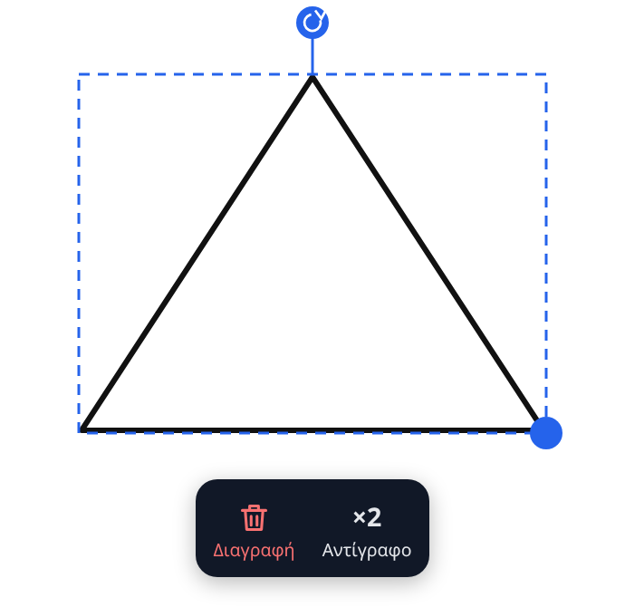
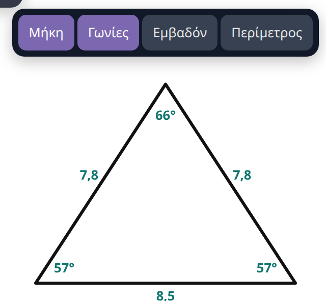

PrismaBoard
1. Πώς ανοίγει
Το PrismaBoard τρέχει μέσα στον browser (Chrome ή Edge). Δεν χρειάζεται λογαριασμό ούτε εγκατάσταση.
- Διεύθυνση: koskan83.github.io/prismaboard
- Χωρίς ίντερνετ: αφού ανοίξει μία φορά με ίντερνετ, ανοίγει και χωρίς. Ίντερνετ χρειάζονται μόνο η αναγνώριση γραφής και το ανέβασμα στο Google Drive.
- Στα Windows υπάρχει και ως ξεχωριστό πρόγραμμα, που επιπλέον μπορεί να γράφει πάνω από άλλα προγράμματα.
2. Η οθόνη με μια ματιά

| Κουμπί | Τι κάνει |
|---|---|
| Επιλογή | Πιάνεις, μετακινείς, μεγαλώνεις, στρέφεις ή σβήνεις ό,τι υπάρχει στη σελίδα. |
| Γραφή | Στυλό. Δεύτερο πάτημα ανοίγει πάχος, δείκτη λέιζερ και αυτόματη αναγνώριση. |
| Υπογρ. | Υπογραμμιστικό: τραβά πάντα ευθεία και δεν σκουραίνει αν ξαναπεράσεις. |
| Κείμενο | Πληκτρολογημένο κείμενο όπου πατήσεις. |
| Γόμα | Σβήνει κομμάτι ή ολόκληρη γραμμή. Σβήνει και μετρήσεις. |
| Μέτρηση | Μήκη, γωνίες, εμβαδόν και περίμετρος πάνω στα σχήματα. |
| Κίνηση | Σέρνεις τη σελίδα με ένα δάχτυλο. |
| Χρώματα | Τέσσερα γρήγορα χρώματα και παλέτα για οποιοδήποτε άλλο. |
| Αναίρ. / Ξανά | Αναίρεση και επανάληψη της τελευταίας ενέργειας. |
| Εισαγ. | Εικόνα, PDF ή Word, στιγμιότυπο οθόνης, επικόλληση, σελίδα από πρότυπο. |
| Όργανα | Σχήματα, άξονες και συναρτήσεις, όργανα γεωμετρίας, φυσική, παρουσίαση. |
| ‹ 1 / 1 › · Σελίδα | Προηγούμενη και επόμενη σελίδα, νέα σελίδα. |
Πάνω αριστερά είναι το μενού ☰ και το όνομα του μαθήματος. Πάνω δεξιά το zoom.
3. Γραφή και σβήσιμο
- Γράφεις με τη γραφίδα ή με το δάχτυλο. Μπορούν να γράφουν δύο άτομα ταυτόχρονα.
- Πάχος: πάτα ξανά το Γραφή και διάλεξε μία από τις τελείες.
- Ίσια γραμμή με το χέρι: τράβα τη γραμμή και κράτα τη γραφίδα ακίνητη στο τέλος. Γίνεται κανονική ευθεία. Το ίδιο ισχύει για κύκλο, ορθογώνιο, τρίγωνο, ρόμβο και παραλληλόγραμμο: τα σχεδιάζεις στο περίπου και κρατάς το στυλό ακίνητο στο τέλος.
- Δείκτης λέιζερ: μέσα στο Γραφή. Ό,τι σχεδιάζεις σβήνει μόνο του μετά από λίγο.
Γόμα
- Πάτα ξανά το Γόμα για να διαλέξεις: σβήσιμο μόνο όσων είναι μέσα στον κύκλο, ή ολόκληρης της γραμμής που αγγίζεις.
- Με την παλάμη ή τη γροθιά σβήνεις χωρίς να αλλάξεις εργαλείο. Εμφανίζεται κόκκινος κύκλος.
- Εικόνες, άξονες, τριγωνομετρικός κύκλος και σχήματα φυσικής δεν σβήνονται με τη γόμα. Τα επιλέγεις και πατάς τον κάδο.
- Όλη η σελίδα: ☰ → Καθαρισμός σελίδας.
4. Μετακίνηση και zoom
- Δύο δάχτυλα: τσίμπημα για μεγέθυνση ή σμίκρυνση, σύρσιμο για μετακίνηση. Δουλεύει με οποιοδήποτε εργαλείο.
- Κουμπιά πάνω δεξιά: − και +. Το ποσοστό στη μέση φέρνει όλη τη σελίδα στην οθόνη.
- Ποντίκι: η ροδέλα κάνει zoom.
- Χάθηκες; ☰ → Προσαρμογή προβολής.
Η σελίδα δεν έχει άκρες: μπορείς να συνεχίσεις να γράφεις προς οποιαδήποτε κατεύθυνση.
5. Επιλογή, μετακίνηση, περιστροφή
Με το Επιλογή πατάς ένα στοιχείο για να το πιάσεις, ή σέρνεις γύρω από πολλά για να τα πιάσεις μαζί.
- Μετακίνηση: σύρε το επιλεγμένο.
- Μέγεθος: σύρε τη μπλε τελεία στη γωνία του πλαισίου.
- Περιστροφή: σύρε τη στρογγυλή λαβή πάνω από το πλαίσιο. Κοντά στις 15°, 30°, 45° κ.λπ. «κουμπώνει».
- Περιστροφή γύρω από άκρη: πάτα μία φορά τη λαβή περιστροφής χωρίς να σύρεις. Το κέντρο πάει σε μια άκρη του σχήματος (λευκός κύκλος με μπλε τελεία). Κάθε πάτημα το πάει στην επόμενη άκρη και στο τέλος πάλι στο κέντρο.
- Κάτω από την επιλογή εμφανίζεται μια μικρή μπάρα με Διαγραφή και Αντίγραφο. Αν έχεις πιάσει χειρόγραφα, έχει και Σε κείμενο, Σε τύπο, Λύση (ενότητα 9).

6. Σχήματα και μετρήσεις
Στην κορυφή του Όργανα η σειρά Πρόσφατα κρατά τα έξι τελευταία που χρησιμοποίησες.
Τα σχήματα είναι στο Όργανα: ευθεία, βέλος, ορθογώνιο, κύκλος, τρίγωνο, ρόμβος, παραλληλόγραμμο, γωνία. Διαλέγεις ένα και σέρνεις στη σελίδα.
Μετρήσεις σε σχήμα
- Πάτα Μέτρηση.
- Πάτα πάνω στο σχήμα. Εμφανίζονται τα μήκη και ένα μικρό μενού.
- Άναψε ή σβήσε Μήκη, Γωνίες, Εμβαδόν, Περίμετρος.
Μέτρηση πάνω σε άξονες
Σχήμα που βρίσκεται πάνω σε άξονες μετριέται στις μονάδες των αξόνων, όχι σε εκατοστά. Οι οριζόντιες πλευρές στις μονάδες του x, οι κατακόρυφες στις μονάδες του y, και το εμβαδόν στο γινόμενό τους (π.χ. ορθογώνιο κάτω από γράφημα υ–t δίνει τη μετατόπιση). Μια ευθεία δείχνει την κλίση της, λ. Όταν οι δύο άξονες έχουν διαφορετική κλίμακα, οι πλάγιες πλευρές δείχνουν μόνο κλίση και δεν εμφανίζονται γωνίες και περίμετρος.
Αλλαγή μιας μέτρησης
Πάτα πάνω στον αριθμό. Ανοίγει πληκτρολόγιο:
- Αριθμός: η πλευρά γίνεται τόσα εκατοστά, ή η γωνία τόσες μοίρες. Το σχήμα αλλάζει.
- Γράμμα ή μονάδα (α, θ, 5 m): αλλάζει μόνο η ετικέτα.
- Κενό: επιστρέφει η πραγματική μέτρηση.

Πίνακας, ορίζουσα, μήτρα
Όργανα → Πίνακας…. Διαλέγεις μορφή (πίνακας με γραμμές, ορίζουσα με δύο κατακόρυφες, μήτρα με αγκύλες) και πατάς το κελί που δίνει τις γραμμές και τις στήλες που θες, έως 6 × 6. Μέσα στα κελιά γράφεις με το στυλό. Η γόμα σβήνει ό,τι έγραψες χωρίς να πειράζει τον πίνακα. Τον ίδιο τον πίνακα τον σβήνεις με επιλογή και κάδο.
Γωνία ανάμεσα σε δύο γραμμές
Με το Μέτρηση πάτα μέσα στο άνοιγμα της γωνίας. Δουλεύει σε γραμμές με κοινή κορυφή, σε γραμμές που διασταυρώνονται και σε γραμμές που σχεδόν ακουμπάνε. Δεν μετρά ελεύθερες γραμμές του στυλό που δεν έχουν γίνει ευθείες.
Σβήσιμο μετρήσεων
Πέρνα τη γόμα πάνω από τον αριθμό ή το τόξο. Σβήνει η μέτρηση, το σχήμα μένει.
Συνισταμένη δύο βελών
Επίλεξε μαζί δύο βέλη με κοινή αρχή (ή μια γωνία) και πάτα Συνισταμένη στη μπάρα κάτω από την επιλογή. Αν αλλάξεις μετά ένα από τα δύο βέλη, η συνισταμένη ακολουθεί.
Τριγωνομετρικός κύκλος
Όργανα → Τριγ. κύκλος. Σέρνεις το σημείο πάνω στον κύκλο και βλέπεις τη γωνία σε μοίρες και σε ακτίνια.
7. Συναρτήσεις και ανάλυση
- Όργανα → Άξονες (ή 1ο τεταρτ., x ≥ 0).
- Με επιλεγμένους τους άξονες, πάτα f(x) και γράψε τη συνάρτηση από το πληκτρολόγιο της εφαρμογής.
- Πάτα ✓. Μπορείς να βάλεις πολλές συναρτήσεις στους ίδιους άξονες.
Κλίμακα: αν μια συνάρτηση δεν χωράει στους άξονες (π.χ. y = −200x) ή βγαίνει πολύ χαμηλή, ο κατακόρυφος άξονας αλλάζει μόνος του κλίμακα (π.χ. 200 ανά γραμμή) ώστε να φαίνεται ολόκληρη. Οι συνηθισμένες καμπύλες (x², 1/x, ημx) μένουν με 1 ανά γραμμή. Για τον οριζόντιο άξονα πάτα ×1 με επιλεγμένους τους άξονες: κάθε πάτημα αλλάζει πόσο αξίζει μια γραμμή (1, 2, 5, 10, 20, 50, 100).
Ένωση δύο γραφικών: σύρε τους άξονες της μίας πάνω στους άξονες της άλλης και άφησέ τους. Οι συναρτήσεις της περνούν στους πρώτους άξονες με άλλο χρώμα και οι δεύτεροι άξονες φεύγουν. Με αναίρεση χωρίζουν ξανά.
Άξονες χωρίς αριθμούς: με επιλεγμένους τους άξονες πάτα 123. Οι αριθμοί σβήνουν και γράφεις δικές σου τιμές με τη γραφίδα (π.χ. ανά 10 ή 20). Οι επόμενοι άξονες μπαίνουν όπως άφησες τους τελευταίους.
| Γράφεις | Σημαίνει |
|---|---|
| x²-3x+2 · 1/x · √x | Πολυώνυμα, κλάσματα, ρίζες |
| ημ( · συν( · εφ( · σφ( | Τριγωνομετρικές (με ελληνικά ονόματα) |
| ln( · log( · e · π | Λογάριθμοι και σταθερές |
| a · b · c · k · λ · ω | Παράμετροι: εμφανίζεται ρυθμιστικό για την τιμή καθεμιάς |
Το • Σημεία δείχνει ρίζες, ακρότατα και σημεία τομής.
Εργαλεία ανάλυσης
Βρίσκονται στο Όργανα και, με επιλεγμένους τους άξονες, στη σειρά πάνω από τη γραμμή εργαλείων.
| Κουμπί | Τι δείχνει |
|---|---|
| ∫ | Ορισμένο ολοκλήρωμα ως εμβαδόν. Σέρνεις τα δύο άκρα πάνω στον άξονα. Δεύτερο πάτημα: χωρίο ανάμεσα σε δύο συναρτήσεις· τα άκρα πάνε μόνα τους στα σημεία τομής τους και βγαίνει το εμβαδόν. Όταν τα σέρνεις, «κουμπώνουν» στα σημεία τομής (ή στις ρίζες). |
| Σ | Αθροίσματα Riemann. Κάθε πάτημα διπλασιάζει τα ορθογώνια: 4, 8, 16, 32. |
| lim | Όριο σε σημείο. Σέρνεις το σημείο πάνω στην καμπύλη προς το x₀. |
| f′ | Εφαπτομένη και παράγωγος. Δεύτερο πάτημα: και η τέμνουσα. |
| Ασύμπτωτες | Κατακόρυφες, οριζόντιες και πλάγιες. |

8. Όργανα, φυσική, παρουσίαση
Όργανα γεωμετρίας
- Χάρακας και Μοιρογνωμόνιο: τα μετακινείς και τα στρέφεις πάνω στη σελίδα.
- Διαβήτης: χαράζει κύκλους και τόξα.
Φυσική
Φυσική… ανοίγει έτοιμα σχήματα. Τα ελατήρια ζωντανεύουν: τράβα το σώμα και άφησέ το για να ταλαντωθεί. Με επιλεγμένο ελατήριο μπορείς να δείξεις θέση φυσικού μήκους, θέση ισορροπίας και ±A, να βάλεις απόσβεση ή να το σταματήσεις.
Παρουσίαση
- Χρονόμετρο για ασκήσεις με χρόνο.
- Κουρτίνα από πάνω και από κάτω: κρύβουν μέρος της σελίδας και τις σέρνεις από τη λαβή. Γράφεις και πάνω τους με το στυλό, σαν δεύτερο πίνακα.
- Προβολέας: φωτίζει μόνο ένα σημείο.
- Αναπαραγωγή: ξαναπαίζει τη σελίδα βήμα βήμα, με τη σειρά που γράφτηκε.

9. Κείμενο και αναγνώριση γραφής
Με το Κείμενο πατάς στη σελίδα και πληκτρολογείς.
Η αναγνώριση γραφής μετατρέπει χειρόγραφα σε καθαρό κείμενο ή τυπωμένο μαθηματικό τύπο:
- Κατ' επιλογή: επίλεξε τα χειρόγραφα και, στη μπάρα κάτω από την επιλογή, πάτα Σε κείμενο ή Σε τύπο.
- Αυτόματα: μέσα στο Γραφή άναψε Aα ή √x. Ό,τι γράφεις μετατρέπεται μόλις σταματήσεις.
Λύση άσκησης: πιάσε με το λάσο μια εξίσωση ή άλλη άσκηση και πάτα Λύση. Η λύση γράφεται τυπωμένη κάτω από το χειρόγραφο, που μένει όπως ήταν. Τη λύση τη γράφει υπηρεσία τεχνητής νοημοσύνης και μπορεί να έχει λάθος: έλεγξέ την πριν τη δείξεις στην τάξη.
Έλεγχος λύσης μαθητή: πιάσε με το λάσο τη λύση που έγραψε ένας μαθητής και πάτα Έλεγχος. Από κάτω γράφεται με πράσινο ότι είναι σωστή, ή με κόκκινο σε ποια γραμμή είναι το πρώτο λάθος και ποια είναι η σωστή μορφή της. Κι αυτό το γράφει υπηρεσία τεχνητής νοημοσύνης: δες το πρώτα εσύ.
Γραφική παράσταση από το λάσο: πιάσε με το λάσο μια συνάρτηση ή εξίσωση (χειρόγραφη ή από Word/PDF) και πάτα Γραφική. Μπαίνουν άξονες με την καμπύλη της. Αν η συνάρτηση έχει περιορισμό (π.χ. 0 ≤ t ≤ 5) σχεδιάζεται μόνο εκεί, και οι άξονες διαλέγονται ανάλογα: μόνο το δεξί μισό όταν x ≥ 0, μόνο το 1ο τεταρτημόριο όταν και οι τιμές είναι θετικές. Αν το πεδίο ορισμού είναι μεγάλο (π.χ. 0 ≤ t ≤ 50), ο οριζόντιος άξονας αλλάζει κλίμακα ώστε να χωράει ολόκληρο. Δίκλαδες συναρτήσεις μπαίνουν με όλους τους κλάδους τους. Έλεγξε ότι ο τύπος δίπλα στους άξονες είναι αυτός που έγραψες.
Ερωτήσεις από Word ή PDF: το Λύση και το Έλεγχος βλέπουν ό,τι υπάρχει μέσα στην περιοχή που κύκλωσες με το λάσο, ακόμα κι αν είναι κομμάτι σελίδας που ήρθε από Word ή PDF. Κύκλωσε την ερώτηση μαζί με τις επιλογές της: το Λύση γράφει ποια είναι η σωστή και γιατί, και το Έλεγχος λέει αν είναι σωστή η επιλογή που έχεις σημειώσει με το στυλό.
10. Σελίδες, εισαγωγή, φόντο
- Νέα σελίδα: Σελίδα. Με τα ‹ › αλλάζεις σελίδα.
- Διαγραφή σελίδας: ☰ → Διαγραφή σελίδας.
- Φόντο: ☰ → λευκό ή σκούρο, σκέτο, με πλέγμα ή με γραμμές τετραδίου.
Εισαγωγή (κουμπί «Εισαγ.»)
- Εικόνα, PDF ή Word (.docx) από αρχείο. Μπορείς και να σύρεις το αρχείο πάνω στον πίνακα.
- Στιγμιότυπο οθόνης: φωτογραφίζει άλλο παράθυρο και το βάζει στη σελίδα.
- Επικόλληση εικόνας από το πρόχειρο.
- Σελίδα από πρότυπο: έτοιμες σελίδες με ένα πάτημα (Δεδομένα – Ζητούμενα – Λύση, Δύο στήλες, Μελέτη συνάρτησης· στο Δημοτικό: Κλάσματα, Αριθμοί ως το 1000, Τι ώρα είναι;, Προπαίδεια). Μπορείς και να αποθηκεύσεις δική σου σελίδα ως πρότυπο για να τη ξαναχρησιμοποιείς.
Επιλογή σελίδων από PDF ή Word
Όταν το αρχείο έχει πάνω από μία σελίδα, ανοίγει παράθυρο με μικρογραφίες. Πατάς μια σελίδα για να τη βγάλεις ή να τη ξαναβάλεις και μετά Εισαγωγή. Κάθε σελίδα του αρχείου γίνεται μία σελίδα του πίνακα και γράφεις από πάνω της.
Από το Word ανοίγουν μόνο αρχεία .docx. Η σελιδοποίηση μπορεί να διαφέρει λίγο από αυτή που βλέπεις στο Word. Αν θες ακριβώς την ίδια εικόνα, αποθήκευσε το έγγραφο ως PDF.

11. Μαθήματα και αποθήκευση
Κάθε πίνακας είναι ένα «μάθημα» με όνομα. Αποθηκεύεται μόνο του στη συσκευή όσο δουλεύεις.
- Βιβλιοθήκη: πάτα το εικονίδιο με τα τέσσερα τετράγωνα, αριστερά από το όνομα του μαθήματος, ή ☰ → Μαθήματα….
- Μετονομασία: πάτα πάνω στο όνομα του μαθήματος και γράψε το καινούριο.
- Νέο μάθημα, Όνομα, Αντίγραφο, Αρχείο (το κατεβάζει) και Διαγραφή για κάθε μάθημα.
- Τμήματα: με το Τμήμα σε ένα μάθημα γράφεις σε ποιο τμήμα ανήκει (π.χ. Β2). Πάνω από τα μαθήματα εμφανίζονται τότε τα τμήματα: πατάς ένα και βλέπεις μόνο τα δικά του. Νέο μάθημα που φτιάχνεις εκεί μπαίνει στο ίδιο τμήμα.
- ☁ Αντίγραφο στο Drive: ανεβάζει στο δικό σου Google Drive (φάκελος «PrismaBoard» → «Αντίγραφα μαθημάτων») όσα μαθήματα άλλαξαν. Τα αρχεία είναι ιδιωτικά. Γίνεται και μόνο του κάθε φορά που στέλνεις μάθημα στους μαθητές με QR.
- ☁ Φέρε από το Drive: φέρνει μαθήματα που λείπουν από τη συσκευή ή είναι νεότερα στο Drive. Έτσι συνεχίζεις στο σπίτι ό,τι έγραψες στην τάξη, με τον ίδιο λογαριασμό Google.
- Αντίγραφο σε αρχείο: κατεβάζει όλα τα μαθήματα σε ένα αρχείο. Με το Επαναφορά από αρχείο τα ξαναφορτώνεις, και σε άλλη συσκευή.

12. Εξαγωγή και αποστολή στους μαθητές
- PDF: ☰ → Εξαγωγή σε PDF…. Διαλέγεις ποιες σελίδες θα μπουν. Το κουμπί Μόνο αυτή που βλέπω κρατά μόνο την τρέχουσα.
- Εικόνα: ☰ → Ρυθμίσεις και αρχεία… → Εξαγωγή σελίδας σε PNG, για την τρέχουσα σελίδα.
- Αρχείο μαθήματος: στο ίδιο μενού, Αποθήκευση του μαθήματος σε αρχείο. Ανοίγει ξανά στο PrismaBoard με Άνοιγμα αρχείου ως νέο μάθημα… και μπορείς να συνεχίσεις να το δουλεύεις.
- Λογότυπο στο PDF: το ανάβεις ή το σβήνεις από ☰ → Ρυθμίσεις και αρχεία… → Λογότυπο στις σελίδες του PDF.

Τέλος μαθήματος: QR με ένα πάτημα
☰ → Τέλος μαθήματος: QR για τους μαθητές. Όλο το μάθημα γίνεται PDF, ανεβαίνει στο Drive σου και το QR εμφανίζεται μεγάλο στην οθόνη, χωρίς ερωτήσεις. Την πρώτη φορά συνδέεσαι με τον λογαριασμό σου Google. Με την ευκαιρία ανεβαίνουν και τα αντίγραφα ασφαλείας των μαθημάτων που άλλαξαν.
Αποστολή με επιλογή σελίδων
- ☰ → Αποστολή με επιλογή σελίδων…
- Πάτα Ανέβασμα στο Drive και QR. Την πρώτη φορά συνδέεσαι με τον λογαριασμό σου Google.
- Διάλεξε σελίδες. Το PDF ανεβαίνει στον φάκελο «PrismaBoard» του Drive σου.
- Πάτα Μεγάλο QR. Οι μαθητές το σκανάρουν με το κινητό και ανοίγουν το μάθημα.
Η εφαρμογή βλέπει μόνο τα αρχεία που ανέβασε η ίδια, όχι το υπόλοιπο Drive. Όποιος έχει τον σύνδεσμο ή το QR μπορεί να δει το αρχείο. Την κοινή χρήση τη σταματάς από το Google Drive.
Χωρίς Drive: το Κοινοποίηση του PDF κατεβάζει το αρχείο, ή ανοίγει το φύλλο κοινοποίησης της συσκευής όπου υπάρχει.
13. Η γραμμή εργαλείων στα μέτρα σου
Η μικρή λαβή πάνω δεξιά από τη γραμμή εργαλείων έχει τέσσερα κουμπιά:
- ⠿ Μετακίνηση: σύρε τη γραμμή όπου σε βολεύει. Στο πλάι της οθόνης γίνεται κατακόρυφη.
- − + Μέγεθος: μικρότερα ή μεγαλύτερα κουμπιά.
- ▾ Σύμπτυξη: κρύβει τη γραμμή για να μείνει όλη η οθόνη ελεύθερη.
Εκτύπωση: δεξί πλήκτρο (ή παρατεταμένο πάτημα) και Εκτύπωση από το μενού του browser, ή Ctrl+P. Τυπώνονται όλες οι σελίδες του μαθήματος, πάντα σε λευκό χαρτί: σε σκούρο πίνακα η λευκή γραφή γίνεται μαύρη και τα ανοιχτά χρώματα σκουραίνουν. Η γραμμή εργαλείων δεν τυπώνεται και το σήμα μπαίνει κάτω δεξιά.
Από το ☰: Πλήρης οθόνη. Για να βγεις, πάτα το κουμπί με τα τέσσερα βελάκια που εμφανίζεται πάνω δεξιά, δίπλα στο zoom (δεν χρειάζεται πλήκτρο Esc). Από ☰ → Ρυθμίσεις και αρχεία…: Ονόματα κάτω από τα εικονίδια.
14. Δημοτικό
Το PrismaBoard έχει δύο όψεις: Δημοτικό και Γυμνάσιο – Λύκειο. Τη διαλέγεις στην πρώτη οθόνη και την αλλάζεις όποτε θες από το ☰ → Αλλαγή σε Δημοτικό (ή Αλλαγή σε Γυμνάσιο – Λύκειο). Στο Δημοτικό η γραμμή εργαλείων είναι πιο απλή, με εικονίδια-ζωγραφιές, και στα Όργανα υπάρχουν τα εργαλεία των μικρών τάξεων, χωρίς άξονες, συναρτήσεις και φυσική.
Τα εργαλεία αλλάζουν με πάτημα, όποιο εργαλείο κι αν κρατάς (μολύβι, υπογραμμιστικό, Επιλογή): το πάτημα σε κουμπί τους δεν γράφει στον πίνακα. Για να τα μετακινήσεις ή να τα σβήσεις θέλεις το εργαλείο Επιλογή. Τα σέρνεις, τα μεγαλώνεις από τη γωνία και τα σβήνεις όπως κάθε σχήμα. Το πάτημα σε κουμπί ενός εργαλείου (γράμμα, +, κομμάτι) δεν το επιλέγει· για να το επιλέξεις (και να βγει η μπάρα με Διαγραφή και ×2) σύρε το λίγο, ή πάτα σε σημείο του που δεν είναι κουμπί.
| Εργαλείο | Πώς δουλεύει |
|---|---|
| Αριθμογραμμή | Το ⟳ αλλάζει τα όρια: 0–10, 0–20, 0–100, −10 έως 10, 0–1 με δέκατα. Τα «πηδηματάκια» τα σχεδιάζεις με το στυλό. |
| Ε Δ Μ | Κυβάκια για εκατοντάδες, δεκάδες, μονάδες. Τα + και − κάθε στήλης προσθέτουν ή αφαιρούν. Αν βάλεις πάνω από 9 μονάδες, μηδενίζουν και μπαίνει μία δεκάδα (το ίδιο από δεκάδες σε εκατοντάδες)· αν αφαιρέσεις από το 0, «δανείζεται» από την αριστερή στήλη. Πάτημα στον αριθμό κάτω τον κρύβει («Ποιος αριθμός είναι;»). |
| Πίνακας του 100 | Πατάς αριθμούς και χρωματίζονται (πολλαπλάσια, ζυγοί, μοτίβα). |
| Προπαίδεια | Τα γινόμενα είναι κρυμμένα. Πατάς ένα κουτί και φαίνεται· ξανά και κρύβεται. |
| Κάθετη πράξη | Πλέγμα με στήλες Χ Ε Δ Μ και σειρά για τα κρατούμενα. Γράφεις μέσα με το στυλό. |
| Ζυγαριά | Τα μπλε +1 +2 +5 +10 βάζουν βαρίδι αριστερά, τα πορτοκαλί δεξιά. Η ζυγαριά γέρνει προς το μεγαλύτερο άθροισμα και ισορροπεί όταν είναι ίσα. Πάτημα σε βαρίδι το βγάζει. Πάτημα στη σύγκριση (π.χ. 7 < 10) την κρύβει. |
| Χρήματα | Πατάς ένα χαρτονόμισμα ή κέρμα στην επάνω σειρά και μπαίνει στον σωρό. Πάτημα στον σωρό το βγάζει. Πάτημα στο «Σύνολο» το κρύβει. |
| Πίτα, Μπάρα | Κλάσματα: πατάς κομμάτια και χρωματίζονται, τα + και − αλλάζουν σε πόσα κομμάτια κόβεται (ως 12). Δύο μπάρες η μία κάτω από την άλλη δείχνουν ισοδύναμα κλάσματα. |
| Ρολόι | Σέρνεις τους δείκτες: κοντά στους αριθμούς πιάνεις τον λεπτοδείκτη (μπλε, ανά 5 λεπτά), πιο μέσα τον ωροδείκτη (κόκκινος). Για να μετακινήσεις το ρολόι, πιάσ' το από την ώρα κάτω. Πάτημα στην ώρα από κάτω την κρύβει. |
| Ζάρι, Κλήρωση | Πάτημα ρίχνει το ζάρι. Η κλήρωση βγάζει τυχαίο αριθμό από 1 έως όσο ορίσεις με τα + και − (π.χ. ποιος μαθητής θα σηκωθεί). |
| Κρεμάλα | Το 🎲 Νέα λέξη βάζει μια τυχαία λέξη· το ✏️ Δική μου λέξη ανοίγει παράθυρο για να γράψεις εσύ· η λέξη φαίνεται ως κουκκίδες, ώστε να μη τη δουν οι μαθητές (το 👁 τη δείχνει). Το πρώτο και το τελευταίο γράμμα φαίνονται από την αρχή. Οι μαθητές πατούν γράμματα: τα σωστά ανοίγουν, κάθε λάθος προσθέτει ένα κομμάτι στον ανθρωπάκο, και στα 6 λάθη η λέξη αποκαλύπτεται. Οι τόνοι δεν μετράνε. |
| Αστέρι, Φατσούλα, Μπράβο! | Σφραγίδες επιβράβευσης. |
| Κυβάκια | Χτίσιμο σαν παιχνίδι, σε πλέγμα 24 × 14: διαλέγεις υλικό από τη σειρά κάτω (γρασίδι, χώμα, πέτρα, ξύλο, τούβλα, νερό, γυαλί…) και σέρνεις το δάχτυλο για να χτίσεις. Το υλικό που κρατάς μπαίνει πάντα, και πάνω σε άλλο κυβάκι. Στη σειρά υπάρχουν και χαρακτήρες: αγόρι, κορίτσι, γουρουνάκι, τερατάκι, λουλούδι, πόρτα. Σβήνεις με το σφουγγάρι· ο κάδος τα αδειάζει όλα. Πάνω δεξιά μετράει πόσα κυβάκια έχεις βάλει (καλό για μέτρημα, εμβαδόν, περίμετρο). Για να μετακινήσεις το εργαλείο, πιάσ' το από τη σειρά των υλικών. |
| Εικόνες για μέτρημα | Σπίτι, δέντρο, έλατο, θάμνος, αγόρι και κορίτσι ολόσωμα, μήλο, λουλούδι, ήλιος, σύννεφο, καρδιά, μπάλα, μπαλόνι: είναι σχεδιασμένα και μένουν καθαρά όσο κι αν τα μεγαλώσεις. Υπάρχουν και μερικά ακόμα ως emoji (ζώα, αυτοκίνητο, καραμέλα…), που θολώνουν αν μεγαλώσουν πολύ. Με το ×2 Αντίγραφο φτιάχνεις πολλά για προβλήματα («3 μήλα και 2 μήλα»). |
Φόντα τετραδίου: στο ☰, στη σειρά «Φόντο», υπάρχουν δύο ακόμα: τετράδιο γραφής (γραμμές με βοηθητική διακεκομμένη για τα μικρά γράμματα) και τετράδιο αριθμητικής (μεγάλα τετράγωνα).
Ορθογραφία: πιάσε με το λάσο ό,τι έγραψε ένας μαθητής και πάτα Ορθογραφία. Από κάτω γράφεται ποιες λέξεις θέλουν διόρθωση. Θέλει το κλειδί της αναγνώρισης (ενότητα 9) και μπορεί να κάνει λάθος, οπότε ρίξε μια ματιά.
Διάβασέ το: επίλεξε ένα κείμενο και πάτα Διάβασέ το· ο πίνακας το διαβάζει φωναχτά. Κείμενο γραμμένο με το εργαλείο Κείμενο διαβάζεται χωρίς κλειδί. Για χειρόγραφο χρειάζεται το κλειδί της αναγνώρισης. Η φωνή είναι του browser: αν η συσκευή δεν έχει ελληνική φωνή, δεν θα ακουστεί σωστά.
15. Αν κάτι δεν πάει καλά
| Τι βλέπεις | Τι να κάνεις |
|---|---|
| Δεν βλέπω τίποτα στη σελίδα | ☰ → Προσαρμογή προβολής. |
| Η παλάμη αφήνει σημάδια ή δεν γράφει η γραφίδα | ☰ → Ρυθμίσεις και αρχεία… → Διάγνωση αφής/γραφίδας για να δεις τι αναγνωρίζει η οθόνη. |
| Η μέτρηση γωνίας δεν βγαίνει | Πάτα στο κενό ανάμεσα στις γραμμές, όχι πάνω τους. Οι γραμμές πρέπει να είναι ευθείες, όχι ελεύθερο στυλό. |
| Η γόμα δεν σβήνει εικόνα ή άξονες | Επίλεξέ το και πάτα τον κάδο. |
| Η αναγνώριση δεν δουλεύει | Θέλει ίντερνετ και κλειδί στις ρυθμίσεις της (ενότητα 9). |
| Το Drive δεν ανοίγει παράθυρο | Ο browser μπλόκαρε το αναδυόμενο παράθυρο. Επίτρεψέ το για τη σελίδα και ξαναπάτα. |
| Δεν βρίσκω το μάθημα | Πάτα το όνομα πάνω αριστερά για τη βιβλιοθήκη. Τα μαθήματα φαίνονται μόνο στη συσκευή και στον browser όπου γράφτηκαν. |
Στο κάτω μέρος του ☰ → Ρυθμίσεις και αρχεία… φαίνεται η έκδοση (ημερομηνία) που τρέχει στη συσκευή, και το Τι νέο δείχνει τις τελευταίες αλλαγές· εμφανίζεται και μόνο του μία φορά μετά από κάθε ενημέρωση.
Στο ☰ → Ρυθμίσεις και αρχεία… → Λίστα δοκιμής στην τάξη υπάρχει ένας σύντομος έλεγχος για την πρώτη φορά που στήνεις τον πίνακα σε νέα οθόνη.